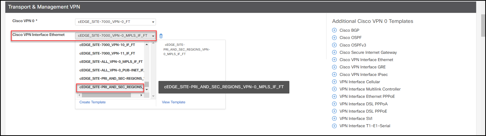
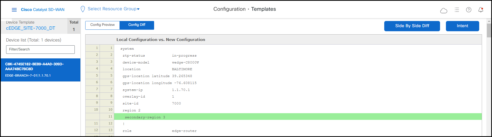

Task 7 - MRF Secondary Region
The Secondary Region is a feature within Multi-Region Fabric that provides a direct path between sites in different regions. Depending on the requirements, this path over 2nd region can serve as primary path between sites in different regions, or backup path or ECMP.
In this task you will create a Secondary Region between the West Site 5000 and the East Sites 6000 and 7000 as shown in the diagram below.

- First, RDP into the Ubuntu Site-5000-VPN-10-Ubun host in Site 5000 using the mRemoteNG client and the ping and trace the IP 10.60.1.101 that lives in Site 6000.

As you can see, it is reachable through the Fabric in the Core now.
Step 1: Create Secondary Region
- Go to Configuration > Network Hierarchy and in Global click on ... and select ‘Add Node’.
- Select the Region Type and name it as SECONDARY-REGION
- Click Add.
Note
As with the primary West and East Region, now this Secondary region has been assigned with the Region ID 3 automatically by the system.
Step 2: Create Transport Interface Feature Templates with Secondary Region
As you can see from the diagram above, the 2nd region will be enabled over both Piblic-Internet and MPLS transports. In this step, you will build two new feature templates for both transport interfaces with 2nd region enabled.
- Go to Configuration > Templates > Feature Templates and look up for the existing cEDGE_SITE-ALL_VPN-0_PUB-INET_IF_FT feature template and click 'Copy' to clone it.

- Name it as cEDGE_SITE-PRI_AND_SEC-REGIONS_VPN-0_PUB-INET_IF_FT and click ‘Copy’

- Now, look up for the template you just created cEDGE_SITE-PRI_AND_SEC-REGIONS_VPN-0_PUB-INET_IF_FT and edit it.

- Go to the Tunnel section and under ‘Advanced Options’, enable ‘Secondary Region’ as Shared Between Primary and Secondary Regions and click ‘update’.

-
Click 'Update'.
-
Go to Configuration > Templates > Feature and look up for the existing cEDGE_SITE-ALL_VPN-0_MPLS_IF_FT feature template to clone it.

- Name it as cEDGE_SITE-PRI_AND_SEC_REGIONS_VPN-0_MPLS_IF_FT

-
Click ‘Copy’.
-
Now, look up again for the template you just created cEDGE_SITE-PRI_AND_SEC_REGIONS_VPN-0_MPLS_IF_FT and edit it.

- Define the Interface Name as a variable (this because it will be used for Site7000 that uses a different interface for the MPLS TLOC).
- Go to the ‘Tunnel’ section and under ‘Advanced Options’, enable ‘Secondary Region’ as Shared Between Primary and Secondary Regions
- Click 'Update'.
Step 3: Create an OMP Feature Template to influenciate the OMP Best Path Algorithm
By default, the path over 2nd region is prefered shorter path, because it provides the direct path for sites in different region. In this step, you will change this default behavior to allow equal cost multi path over direct path and core region path.
-
Go to Configuration > Templates > Feature and let’s copy now the existing cEDGE_ALL_OMP_FT feature template.
-
Name it as cEDGE_OMP_PRI_AND_SEC_REGIONS_FT

-
Click ‘Copy’.
-
Once created it look up for cEDGE_OMP_PRI_AND_SEC_REGIONS_FT and edit it.

- Go to the ‘Best Path’ section, and make Global on to enable the Ignore Region-Path Length During Best-Path Algorithm parameter, then click ‘update’.

- Click 'Update'.
Info
The default value is Off, and by default, OMP gives preference to a direct tunnel path over a hierarchical path because the direct path has fewer hops.
Note
With this configuration, we disable the comparison of the number of hops, OMP applies equal-cost multi-path routing (ECMP) to all routes, and packets can use all available paths.
Step 4: Enable Secondary Region for Site 5000
In this step, you will update the device templates and enable Secondary Region on Site 5000.
-
Modify the Cisco System Feature template currently used by the Site 5000 edge router to participate in the secondary.
-
Go Configuration > Templates > Feature and look up for the cEDGE_EDGE-WEST_SYSTEM_FT and click ‘Copy’
-
Name it as cEDGE_PRI_AND_SEC_REGIONS-WEST_SYSTEM_FT.

- Click ‘Copy’.
- Look up for the cEDGE_PRI_AND_SEC_REGIONS-WEST_SYSTEM_FT feature template you just created and click ‘Edit’
- Make Global on the ‘Secondary Region’ parameter and select SECONDARY-REGION from the dropdown menu.

-
Click ‘Update’ to save the changes.
-
Go to Configuration > Templates > Device Templates look up for the cEDGE_SITE-5000_DT device template and edit it.

- In the ‘Cisco System’ section, select the feature template we previously created named cEDGE_PRI_AND_SEC_REGIONS-WEST_SYSTEM_FT

- Under the ‘Cisco OMP’ section, select the cEDGE_OMP_PRI_AND_SEC_REGIONS_FT feature template we created in step 3.

- Under the ‘Transport & Management VPN’ section, change the two Cisco VPN Interface Ethernet feature templates to the ones created in step 1 named cEDGE_SITE-PRI_AND_SEC-REGIONS_VPN-0_PUB-INET_IF_FT and cEDGE_SITE-PRI_AND_SEC_REGIONS_VPN-0_MPLS_IF_FT respectively.

- Finally, click ‘Update’, and fill out the two new variables with GigabitEthernet2 and 10.2.11.2/24 as shown below.

- Click ‘Update’ and you should see in the ‘Config Diff’ section all the next lines in green color being pushed to the device if you scroll down.


- After compare the diff, click ‘Configure Devices’ to push configuration.
Step 5: Enable Secondary Region for Site 6000 and 7000
In this step, you will update the device templates and enable Secondary Region on Site 6000 and site 7000. Again, for simplicity, let’s copy the ‘System’ Feature template currently used by the Site 6000 and site 7000 to participate in the secondary.
- Go to Configuration > Templates > Feature; look up for the cEDGE_EDGE-EAST_SYSTEM_FT and click ‘Copy’.
- Name it cEDGE_PRI_AND_SEC_REGIONS-EAST_SYSTEM_FT
- Look up for cEDGE_PRI_AND_SEC_REGIONS-EAST_SYSTEM_FT feature template you just created and click ‘Edit’.

- Make Global on the ‘Secondary Region’ parameter and select SECONDARY-REGION from the dropdown menu.
-
Click ‘Update’.
-
Update device template for Site 6000
-
Go to Configuration > Templates > Device Templates; look up for the cEDGE_SITE-6000_DT device template and edit it.

- Under ‘Cisco System' section select the feature template cEDGE_PRI_AND_SEC_REGIONS-EAST_SYSTEM_FT.
- Under ‘Cisco OMP’ section, select the cEDGE_OMP_PRI_AND_SEC_REGIONS_FT feature template.

- Under the ‘Transport & Management VPN’ section, change the two Cisco VPN Interface Ethernet feature templates to the ones created in step 2 named cEDGE_SITE-PRI_AND_SEC-REGIONS_VPN-0_PUB-INET_IF_FT

-
Click ‘Update’, then ‘Next’.
-
You should see the all the next lines in green color in the ‘Config Diff’ being pushed to the device if you scroll down.

-
Click ‘Configure Devices’ to push the configuration after compare the diff.
-
Let’s repeat the same process to update device template for Site 7000.
-
Go to Configuration > Templates > Device Templates; look up for the cEDGE_SITE-7000_DT device template and edit.
- Under ‘Cisco System’ section select the cEDGE_PRI_AND_SEC_REGIONS-EAST_SYSTEM_FT feature template.

- Under the ‘Cisco OMP’ section, select the cEDGE_OMP_PRI_AND_SEC_REGIONS_FT feature template.
- Under the ‘Transport & Management VPN’ section, change the two Cisco VPN Interface Ethernet feature templates to the ones created in step 2 named cEDGE_SITE-PRI_AND_SEC_REGIONS_VPN-0_MPLS_IF_FT.

- Click ‘Update’, and fill out the two new variables with GigabitEthernet1 and 10.2.12.2/24 as shown below.

- Click ‘Update’ and you should see in the ‘Config Diff’ section all the next lines in green color being pushed to the device if you scroll down.



- After compare the diff, click ‘Configure Devices’ to push configuration.
Step 6: Make Controller-3 Secondary Region-aware and Validate
Sites Site 5000, Site 6000 and Site 7000 have been configured to participate in the SECONDARY-REGION (3). However there is no controller for secondary region yet.
In this step, you will configure Controller-3 (1.1.1.5) for secondary region.
- Go to Configuration > Templates > Feature Templates and look up for the CONTROLLER-3_SYSTEM_FT feature template and edit it.
- In the ‘Region ID List’ parameter, add the SECONDARY-REGION to serve this region besides the Core Region.
- Click ‘Update’, then ‘Next’ and you should see the next in the ‘Config Diff’.
- Click ‘Configure Devices’ to push the configuration.
Now, Site 5000 has connectivity to Site 6000 and Site 7000, and vice versa, through the Core Fabric and the Direct Path over the secondary region.
Because you enabled ‘Ignore Region-Path Length During Best-Path Algorithm’ on the new OMP template in step 1, the system uses ECMP over all available paths, including the direct path and the path over the core region. This is beneficial in use cases where the requirement is to send non-critical traffic using lower-cost WAN links instead of the optimized middle-mile WAN or PAYG links in the core region.
-
Let's verify this from SDWAN manager.
-
Go to Monitor > Devices > EDGE-BRANCH-5-01
- Select Troubleshooting from the navigation panel on the left and then select Simulate Flows

- In the Simulate Flows window, enter the following parameters for simulated flow.
- VPN : VPN- 10
- Source/Interface for VPN - 10: GigabitEthernet3
- Source IP: 10.50.1.129
- Destination IP: 10.60.1.101
- Click Simulate, and you should see output similar to the screenshot below.

-
As you can see the output from simulated flow, there are multiple paths available from site 5000 to site 6000. You can try different IPs in site 6000 and or site 7000 and see what is the output.
-
We can also confirm this from CLI.
- Go to the mRemoteNG client and SSH into the EDGE-BRANCH-5-01 and then issue the command show ip route vrf 10.
- As we can see from the output, all prefixes from the East Region have 3 TLOCs IP pointing to, two being through the West Border routers, and one being the Originator TLOC IP for the direct path.